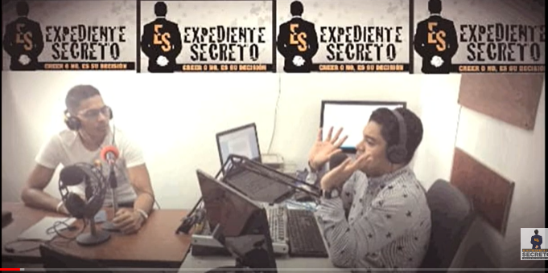
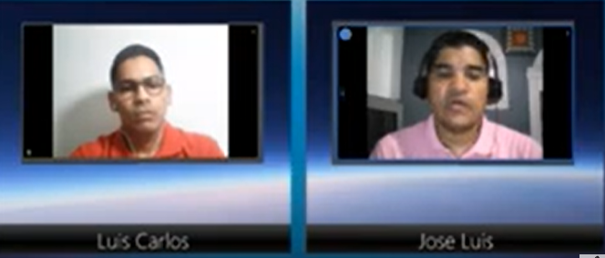

Expediente Secreto es un programa de investigación que presenta una temática enfocada al fenómeno ovni y la evidencia extraterrestre en la historia de la humanidad y el planeta tierra. Desarrollando temas que presentan enigmas, grandes misterios de la humanidad, mitos, leyendas, evidencia extraterrestre en la antigüedad y en la actualidad con una perspectiva consciente, Expediente Secreto busca despertar en los oyentes un interés por la investigación y por resolver dudas a muchas preguntas que en algún momento de nuestras vidas nos hemos hecho.!
En Vivo: Miercoles: 8:00 pm
En Diferido: Martes: 9:00 am

Emitimos nuestros programas gracias a la señal digital de Radio Cultural Planeta Consciencia, una novedosa Radio ON LINE donde nacimos integrada por un equipo interdisciplinario enamorado de nuestra riqueza y expresión cultural latinoamericana, con un alto sentido humano, social y de consciencia que siente en la radio una forma universal de transmitir no solo información, sino energía, alegría, conocimientos y vida, una ventana auditiva que dibuja en ondas sonoras una tangible esperanza.

¿DE DÓNDE VENIMOS?
Nuestros inicios datan del 19 de Enero de 2011, cuando por iniciativa de un grupo de voluntarios crearon un programa radial en la emisora comunitaria Playa Caribe 105.1 MHz del corregimiento de La Playa en la ciudad de Barranquilla – Colombia, gracias a la perseverancia de ese grupo de visionarios, dicho programa se convirtió en la semilla que dio origen el día 6 de Mayo de 2011 en Barranquilla a lo que hoy es Radio Cultural Planeta Consciencia, Nuestra cuna, este primer estudio se logró con grandes esfuerzos y un equipo casi obsoleto, sin embargo las ganas y la voluntad fueron más poderosas, tanto que no solo se mejoraron los equipos sino que con el transcurrir del tiempo se han ido abriendo otros cinco estudios más en Colombia, de igual manera la parrilla de programación se ha ido nutriendo con programas de mejor nivel y todo ese esfuerzo nos permite presentarnos como la primera Radio on-line de América Latina. Estos ocho años han demostrado que la claridad de propósito es la energía que provee los recursos necesarios para que todo sueño se convierta en realidad, por ello somos conscientes que nuestra historia apenas comienza.

¿PARA DÓNDE VAMOS?
Misión
Recuperar la esencia original de la radiodifusión, a través la interacción con nuestros oyentes y una programación cultural, humana y social que busque informar, educar y entretener dentro de parámetros de la veracidad y la objetividad, fomentando un nuevo pensamiento de consciencia planetaria en todos nuestros radioescuchas en América Latina y el mundo entero.
Visión
Ser reconocidos como la primera cadena radial on-line de América Latina comprometida con lo social, lo humano, lo espiritual y lo ambiental.